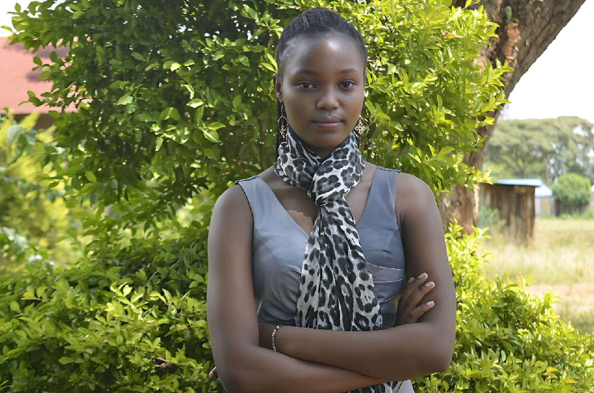

<title>about-us - Graxy Graphics</title>
<link rel="stylesheet" href="index.css">


<section id="About"> 
<h2 > 
About Us
</h2>
<p> 
  <br> Graxy Graphics is a creative design studio dedicated to delivering high-quality visual content that captures attention and communicates your message with impact. <br> From eye-catching posters and professional fliers to vibrant banners and custom graphics, <br> we bring ideas to life through bold design and artistic precision. With a passion for innovation and a commitment to excellence, <br>we help individuals, businesses, and brands stand out in today’s fast-paced digital world. <br> At Graxy Graphics, your vision is our inspiration. <br>
 
</p>

</section>
<section id="story">
  <h2>Our Story</h2>
  <div class="timeline">
    <div class="timeline-item">
      <div class="timeline-content left">
        <h3>2020 – The Beginning</h3>
        <p>Graxy Graphics was born out of a passion for creativity and visual storytelling. It started as a one-person vision with a sketchbook and a dream.</p>
      </div>
    </div>
    <div class="timeline-item">
      <div class="timeline-content right">
        <h3>2022 – Growing Bold</h3>
        <p>We expanded our portfolio, designing posters, fliers, and banners for local events, businesses, and creatives across Kenya.</p>
      </div>
    </div>
    <div class="timeline-item">
      <div class="timeline-content left">
        <h3>2024 – Going Digital</h3>
        <p>We embraced online platforms, showcasing our work through digital media and helping clients boost their online presence.</p>
      </div>
    </div>
    <div class="timeline-item">
      <div class="timeline-content right">
        <h3>2025 – Today</h3>
        <p>Graxy Graphics is now a trusted name in creative design, delivering professional, impactful graphics that tell your story with style.</p>
      </div>
    </div>
  </div>
</section>

<section> 
<h2>Our Mission</h2>
<p> 
Our mission is to empower our clients with stunning visual designs that enhance their brand identity and engage their audience. We strive to create unique, high-quality graphics that not only meet but exceed expectations, ensuring every project reflects our dedication to creativity and professionalism.</p>
</p>
<h3>vision</h3>
<p>Our vision is to be a leading creative design studio recognized for our innovative approach and exceptional quality in graphic design. We aim to inspire and connect with audiences through compelling visuals that tell stories and evoke emotions.</p>
</section>
<section> 
<section id="values">
  <h2>Our Core Values</h2>
  <div class="values-container">
    <div class="value-card">Creativity</div>
    <div class="value-card">Quality</div>
    <div class="value-card">Integrity</div>
    <div class="value-card">Customer Focus</div>
    <div class="value-card">Innovation</div>
  </div>
</section>
<section id="team">
  <h2>Meet Our Team</h2>
  <p>Our team is composed of talented designers, artists, and creative thinkers who are passionate about bringing your ideas to life. With diverse backgrounds and expertise, we collaborate to deliver exceptional results for every project.</p>
    <div class="team-member">
        
        <h3>Moses Mugo</h3>
        <p>Lead Designer</p>

    </div>
    <div class="team-member">
        
        <h2>GRACE NJOROGE</h2>
        <p>Graphics Director</p>
    </div>
    <div> 
        
        <h2>ALEX NJUGUNA</h2>
        <p>Creative Strategist</p>
    </div>

</section>
<section>
    <footer>
        &copy; 2025 Graxy Graphics. All rights reserved.
    </footer>
</section>